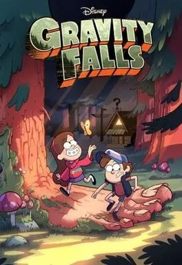

The genetics
Cloning is the joke and the moral of the episode's main story. The boy band Sev'ral Timez is made up of clones owned by their manager, Ergman Zarazin, who keeps them caged and replaces any batch that performs badly with fresh copies. The episode never explains how the clones are made; cloning serves as a satire of the manufactured, interchangeable boy bands of the pop industry and of treating people as products. Zarazin is a cartoon villain who is arrested, and the clones are presented as sympathetic victims who are finally freed, although Mabel herself is tempted to keep them as her own possessions. Real clones would be ordinary individuals born as babies, not ready-made adult copies.
How genetics is portrayed
- Overall portrayal of genetics
- negative Cloning is used to satirize the exploitation of performers as interchangeable products by a cruel owner.
- Outcome of the genetic intervention
- negative The clones live caged as disposable commodities until Mabel frees them, and are left to fend for themselves in the woods.
- Ergman Zarazin
- villain Aim: commercial (negative). He produces cloned boy-band members, keeps them in cages and threatens to replace underperformers with new clones to keep his act profitable. The episode presents him as a cruel exploiter, and he is arrested.
The story
Mabel and her friends Candy and Grenda want to see the boy band Sev'ral Timez, but the concert is sold out, so they sneak backstage. There they discover that the band members are clones kept in cages like animals by their owner, Ergman Zarazin, who scolds them for a poor performance and threatens to replace them with a new batch. The girls smuggle the boys out and hide them at the Mystery Shack, where Mabel, wanting to keep them for herself, pushes her friends aside; Zarazin comes looking for the band and ends up arrested after Soos removes his car's licence plate. Meanwhile Dipper, jealous that Wendy has given Robbie another chance after he sang her a song, discovers with Grunkle Stan that the song hides a hypnotic message, and Wendy breaks up with Robbie. Moved by a song the band writes for her, Mabel apologizes to her friends and the clones are set free in the woods.